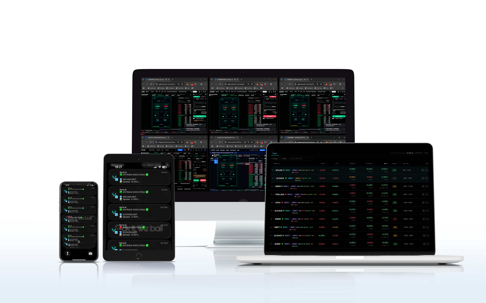

Janelas duram segundos
A diferença de preço entre corretoras some antes de você conseguir executar. Operar manualmente significa sempre chegar tarde.
O AURA opera arbitragem automática em 4 exchanges ao mesmo tempo, identificando diferenças de preço e executando em milissegundos. Você não precisa entender de cripto, não precisa estar online, não precisa fazer nada. Configure uma vez e o bot trabalha por você 24 horas por dia.

Estes são prints do nosso Discord. Clientes reais, resultados reais, enviados por eles mesmos sem nenhum incentivo.


Não é falta de capital. É falta de velocidade e disponibilidade.
A diferença de preço entre corretoras some antes de você conseguir executar. Operar manualmente significa sempre chegar tarde.
As melhores oportunidades aparecem de madrugada, no fim de semana, enquanto você trabalha. O mercado não tem horário.
Calcular taxas, spreads e timing em tempo real é impossível sem automação. A maioria desiste antes de entender o mecanismo.
Arbitragem não é especulação. É matemática.
O bot monitora o preço do mesmo ativo em Gate, BingX, MEXC e Bitget ao mesmo tempo, em tempo real.
Ao detectar uma diferença lucrativa acima das taxas, compra na exchange mais barata e vende na mais cara, em milissegundos.
A diferença de preço, descontadas as taxas, vai direto para o seu saldo. Repetido centenas de vezes por semana.
Você não está apostando na alta ou na queda de nenhum ativo. Está capturando ineficiências de mercado que existem independente da direção do preço.
A maior parte das pessoas que entra em cripto perde dinheiro porque tenta adivinhar o mercado. Arbitragem é diferente: você lucra com a diferença de preço entre exchanges, não com a direção do preço. Se Bitcoin sobe, você lucra. Se cai, você lucra também. É matemática, não aposta.
O lucro vem da diferença entre corretoras, não da valorização do ativo. Bitcoin subindo ou caindo não importa, a diferença de preço entre exchanges sempre existe.
Cada operação abre e fecha em questão de segundos. Você não fica exposto ao mercado por horas ou dias esperando o preço mover.
O bot só executa quando o lucro supera todas as taxas envolvidas, comissões das exchanges e custos de transferência calculados automaticamente.
Diferente da maioria dos bots, o AURA não usa chaves de API. Ele roda como extensão no seu próprio navegador, dentro das exchanges que você já está logado. Nós nunca temos acesso ao seu saldo, login ou senhas.
Cada funcionalidade existe para que o bot seja mais rápido e preciso do que qualquer operador humano.
Roda em servidor próprio, independente do seu dispositivo. Trabalha enquanto você dorme, viaja ou descansa.
Instale o AURA no seu navegador via Tampermonkey e o bot já começa a operar. Passo a passo guiado no Scanner.
Arbitragem não depende de previsão de mercado. O lucro vem da diferença matemática de preço entre corretoras.
Feito para quem quer resultado, não para desenvolvedores. Você configura uma vez e o bot faz o resto.
Em menos de 20 minutos você já está com o AURA rodando nas suas exchanges.
Acesso imediato ao Scanner e às aulas gravadas que ensinam a configurar e operar com o AURA. Sem fidelidade, sem compromisso.
Instale o AURA no seu navegador via Tampermonkey e o bot já começa a operar nas suas exchanges. Sem API, sem chaves, sem acesso ao seu saldo. Guia passo a passo incluso.
A partir daí é só acompanhar os resultados. O bot identifica e executa as operações automaticamente.
Pague R$49,90 hoje e tenha o AURA rodando na sua conta pelos próximos 7 dias. Tempo suficiente pra ver o bot operando, gerar suas primeiras operações e decidir se faz sentido continuar. Se fizer, a mensalidade de R$197 entra automaticamente. Se não, é só cancelar — sem multa, sem perguntas.
Tudo que você precisa saber antes de começar.
Recomendamos no mínimo R$500 distribuídos entre as 4 exchanges. Esse é o valor que permite o bot identificar e executar operações com folga, considerando as taxas envolvidas. Você pode começar com mais, mas abaixo disso a quantidade de oportunidades viáveis cai bastante e o bot fica parado boa parte do tempo. O capital fica sempre nas suas próprias contas das exchanges — o AURA não tem acesso ao seu saldo, ele só executa as ordens dentro do seu próprio navegador.
Não prometemos valores fixos porque seria desonesto. O resultado depende de três coisas: quanto capital você tem operando, quantas oportunidades o mercado oferece naquele período e a sua configuração de risco no Scanner. O que podemos mostrar são os prints reais dos nossos clientes (você vê alguns na seção "Resultados reais" desta página, e dezenas no nosso Discord), com operações de spread variando entre 1% e 4% em média. Multiplique isso pelo seu capital e pela frequência de operações pra ter uma noção. Quem quer promessa de ganho garantido não é nosso cliente — quem quer uma ferramenta séria rodando por conta própria, é.
Você paga R$49,90 hoje e recebe acesso completo ao AURA pelos próximos 7 dias: Scanner liberado, bot rodando nas 4 exchanges, suporte do nosso time, aulas gravadas e mentoria comigo após o setup. É exatamente a mesma ferramenta que os clientes mensalistas usam — sem versão limitada, sem recursos travados. Após os 7 dias, se quiser continuar, a mensalidade de R$197 entra automaticamente. Se não quiser, é só cancelar antes do fim do período — não cobramos nada além dos R$49,90 iniciais. Sem multa, sem burocracia, sem ligação de retenção.
Não. O AURA foi construído justamente pra quem não entende de cripto e não quer aprender. Você não precisa saber ler gráfico, prever mercado ou escolher moeda — o bot faz tudo isso. O que você precisa fazer é seguir o passo a passo das aulas gravadas (cerca de 20 minutos de configuração com suporte do nosso time via AnyDesk) e depois acompanhar os resultados. Quem nunca operou cripto na vida consegue rodar o AURA sem problema.
Seu dinheiro nunca sai das suas contas nas exchanges, e o AURA nunca tem acesso a ele. Diferente da maioria dos bots do mercado, o AURA não usa chaves de API — ele roda como uma extensão no seu próprio navegador (via Tampermonkey) e executa as operações dentro das exchanges que você já está logado, como se fosse você clicando. Nós não temos acesso ao seu saldo, ao seu login, às suas senhas ou a qualquer dado da sua conta. Você mantém controle total a qualquer momento.
Arbitragem é considerada uma das estratégias de menor risco no mercado cripto, justamente porque você não está apostando se o preço vai subir ou cair — está capturando a diferença de preço entre exchanges, que é matemática pura. Dito isso, nenhuma operação no mercado financeiro tem risco zero: pode haver lentidão de exchange, problemas técnicos pontuais ou variação de spread no meio da operação. O AURA tem mecanismos pra mitigar tudo isso (cálculo automático de taxas, execução em milissegundos, anti-liquidação ativo), mas é importante você entrar entendendo que existe risco — só que muito menor do que trade direcional.
Sim, totalmente. Você configura uma vez no Scanner (capital disponível, percentual mínimo de lucro por operação, exchanges ativas) e o bot identifica e executa sozinho, 24 horas por dia. Você pode acompanhar o histórico no Scanner a qualquer momento, mas não precisa fazer nada manualmente — nem aprovar operação, nem decidir nada.
Sim. Basta deixar o navegador aberto com o Scanner rodando e o AURA continua operando sozinho, 24 horas por dia. Você pode trabalhar, dormir, viajar ou simplesmente viver sua vida — o bot trabalha em segundo plano, identificando e executando as operações automaticamente. A maioria dos clientes deixa rodando direto no PC e só checa os resultados quando quer.
Atualmente o AURA opera simultaneamente em Gate.io, BingX, MEXC e Bitget. São 4 das maiores exchanges globais, todas com alta liquidez e bom volume de oportunidades. Você precisa ter conta nas 4 pra aproveitar o máximo do bot — o setup em cada uma é simples e nosso time guia você no processo.
Sim. Não tem fidelidade, não tem multa, não tem burocracia. Você cancela a qualquer momento e o acesso permanece até o fim do período já pago. Sem ligação de retenção, sem perguntas, sem dificuldade.
Não vai precisar. Logo após a confirmação do pagamento, você é encaminhado pro nosso time de onboarding. O Kevin (nosso especialista) faz uma sessão remota com você via AnyDesk e configura tudo em tempo real — desde a instalação da extensão Tampermonkey até os ajustes finais no Scanner. Você só precisa estar disponível pra acompanhar. Após o setup, eu mesmo (Matheus, fundador do AURA) faço uma call de mentoria pra alinhar a estratégia que faz sentido pro seu capital e perfil. Ninguém é deixado sozinho.
Cada hora sem o AURA é uma janela de arbitragem que passa sem você. Configure em menos de 20 minutos.